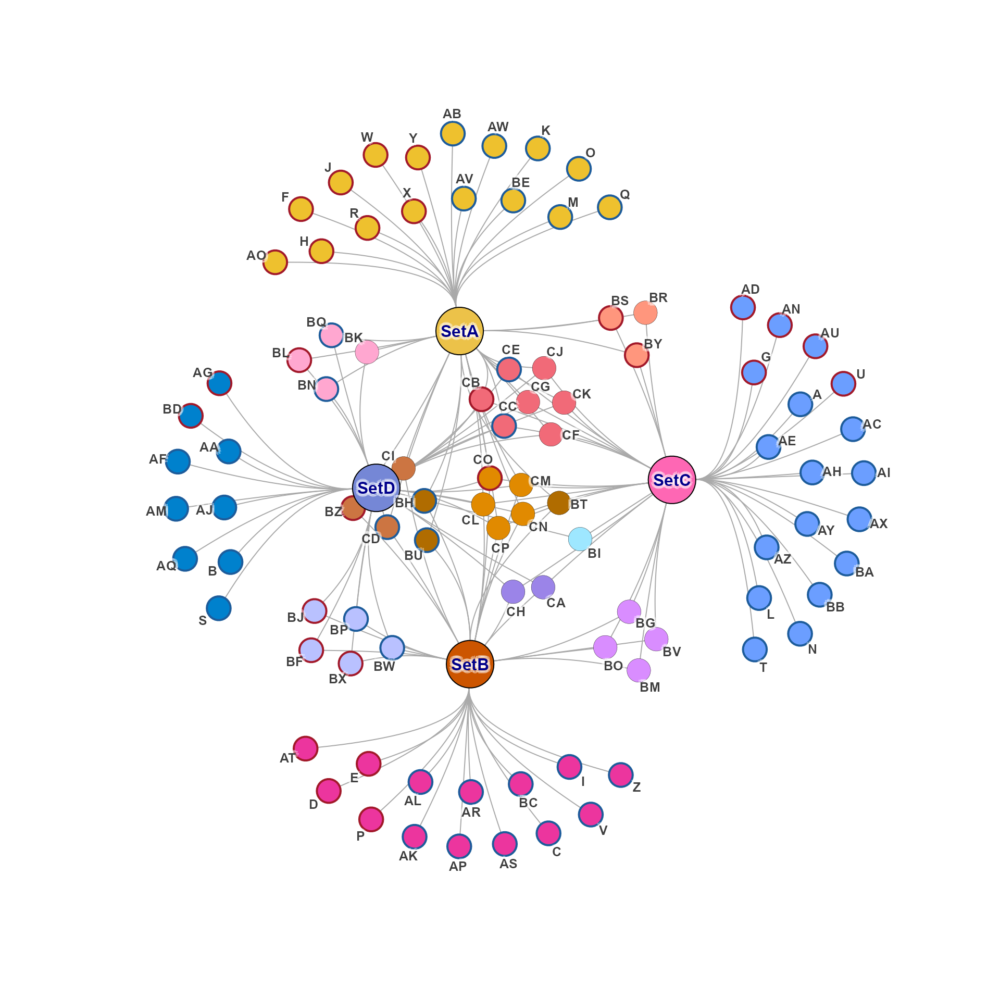
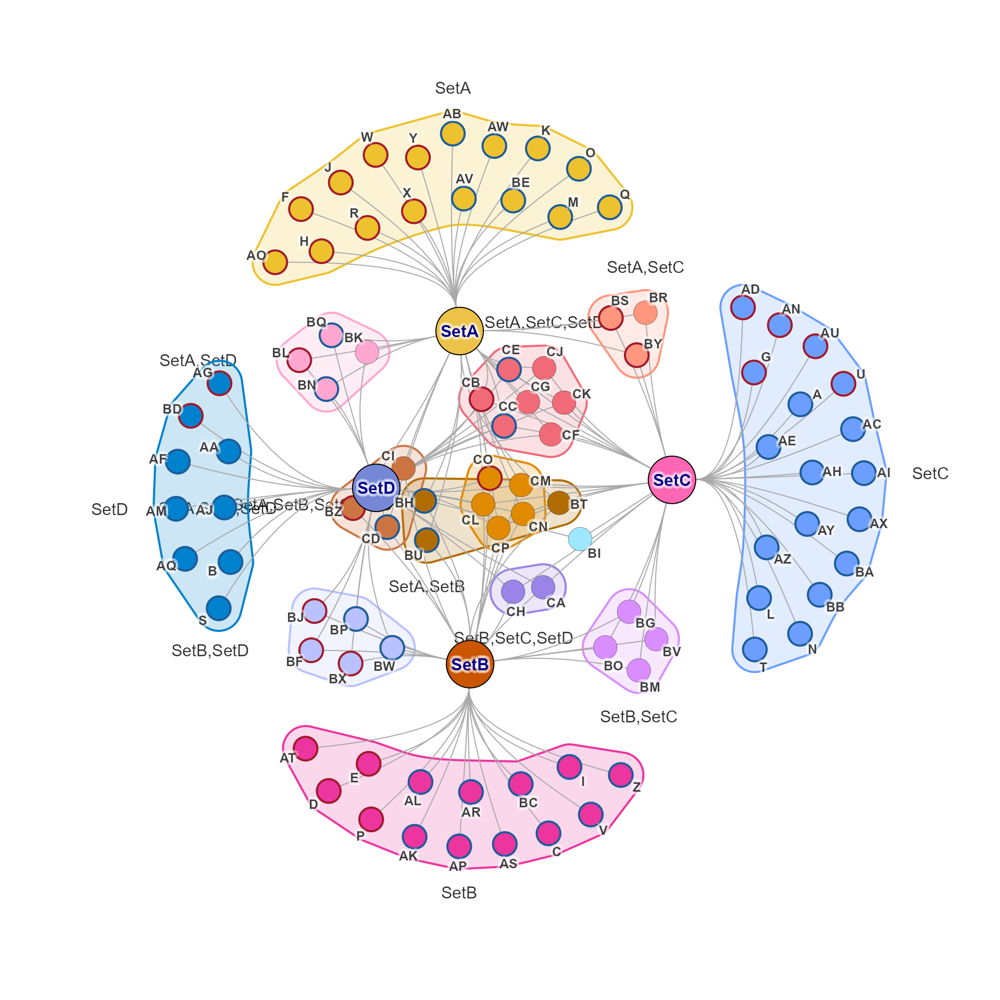

Color edges by nodegroups
Usage
color_nodes_by_nodegroups(
g,
nodegroups = NULL,
nodegroup_colors = NULL,
node_alpha = NULL,
Crange = NULL,
Lrange = NULL,
color_attributes = c("color"),
verbose = FALSE,
...
)Arguments
- g
igraphobject that contains vertex node attribute"color"as seen withigraph::vertex_attr(g, "color").- nodegroups
listorcommunitiesobject that references nodes ingand assigns one or more to nodegroups. Default NULL callsget_cnet_nodeset(), passing '...' for customization.- nodegroup_colors
characteror default NULL which assigns categorical colors bycolorjam::rainbowJam().- node_alpha
numericof default NULL uses 1, with opacity where 0 is transparent, 1 is completely solid.- Crange, Lrange
numericranges passed tocolorjam::rainbowJam()to restrict the chroma and luminance of categorical colors. Default NULL uses the defaults incolorjam::rainbowJam().- color_attributes
charactervector of node attributes to assign new colors, default 'color' assigns color to the node itself. Note that this color is not seen when shape is 'pie' or 'jampie', instead use 'pie.color'.- verbose
logicalindicating whether to print verbose output.- ...
additional arguments are passed to
colorjam::rainbowJam(), notably 'preset' which defines the color wheel used.
Value
igraph object with edge color attribute updated to
represent the result of blending node colors, seen by
igraph::edge_attr(g)$color.
See also
Other jam igraph utilities:
color_edges_by_nodegroups(),
color_edges_by_nodes(),
get_cnet_nodeset(),
jam_igraph(),
launch_shinycat(),
subgraph_jam()
Examples
cnet1 <- make_cnet_test()
igraph::vertex_attr(cnet1, "shape") <- "circle";
cnet2 <- color_nodes_by_nodegroups(cnet1);
# behold color
jam_igraph(cnet2)

# you can enable mark.groups which uses the same colorjam::rainbowJam()
jam_igraph(cnet2, mark.groups=TRUE)
